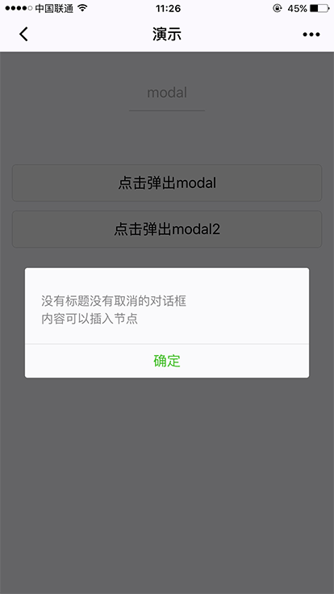
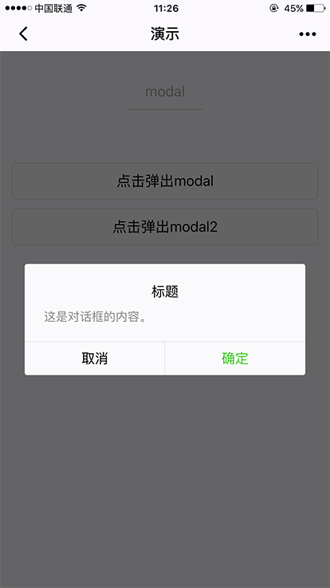

modal
模态弹窗。
| 属性名 | 类型 | 默认值 | 说明 |
|---|---|---|---|
| title | String | 标题 | |
| no-cancel | Boolean | false | 是否隐藏 cancel 按钮 |
| confirm-text | String | 确定 | confirm 按钮文字 |
| cancel-text | String | 取消 | cancel 按钮文字 |
| bindconfirm | EventHandle | 点击 confirm 触发的回调 | |
| bindcancel | EventHandle | 点击 cancel 以及蒙层触发的回调 |
示例：
<modal title="标题" confirm-text="confirm" cancel-text="cancel" hidden="{{modalHidden}}" bindconfirm="modalChange" bindcancel="modalChange">
这是对话框的内容。
</modal>
<modal class="modal" hidden="{{modalHidden2}}" no-cancel bindconfirm="modalChange2">
<view> 内容可以插入节点 </view>
</modal>
<view class="btn-area">
<button type="default" bindtap="modalTap">点击弹出modal</button>
<button type="default" bindtap="modalTap2">点击弹出modal2</button>
</view>
Page({
data: {
modalHidden: true,
modalHidden2: true
},
modalTap: function(e) {
this.setData({
modalHidden: false
})
},
modalChange: function(e) {
this.setData({
modalHidden: true
})
},
modalTap2: function(e) {
this.setData({
modalHidden2: false
})
},
modalChange2: function(e) {
this.setData({
modalHidden2: true
})
},
})
